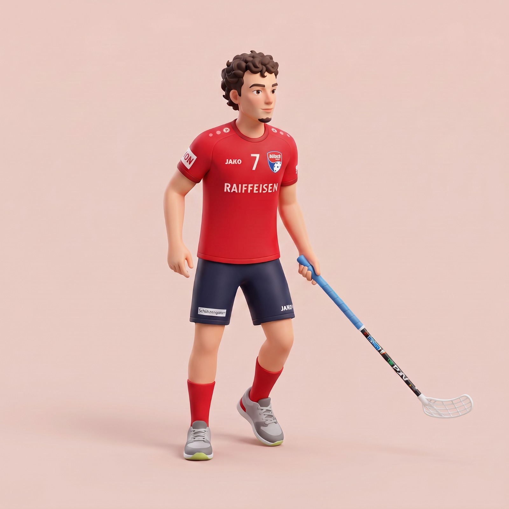

Fotos
Videos
Kontakt

Ich bin Yanic Dammann, Fotograf und Videograf. Ich erzähle Geschichten in schönen Bildern und Videos.
Hier steht ein kurzer Absatz über dich: wie du zur Fotografie gekommen bist, woran du gerne arbeitest und was deine Bilder ausmacht. Zwei bis drei Sätze reichen.
Stationen
- seit 2024Selbstständig – Fotografie & Video
- 2021–2024Position, Firma / Agentur
- 2018–2021Ausbildung oder Studium, Schule